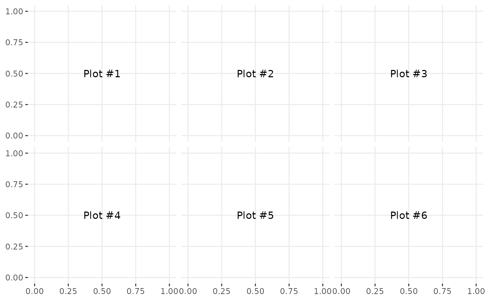
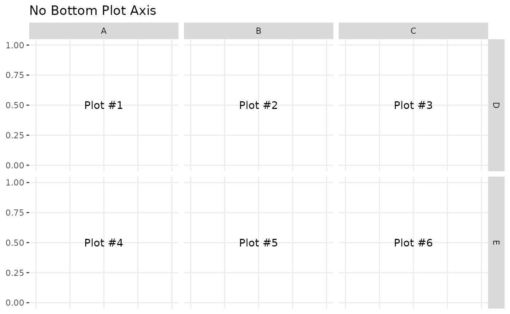
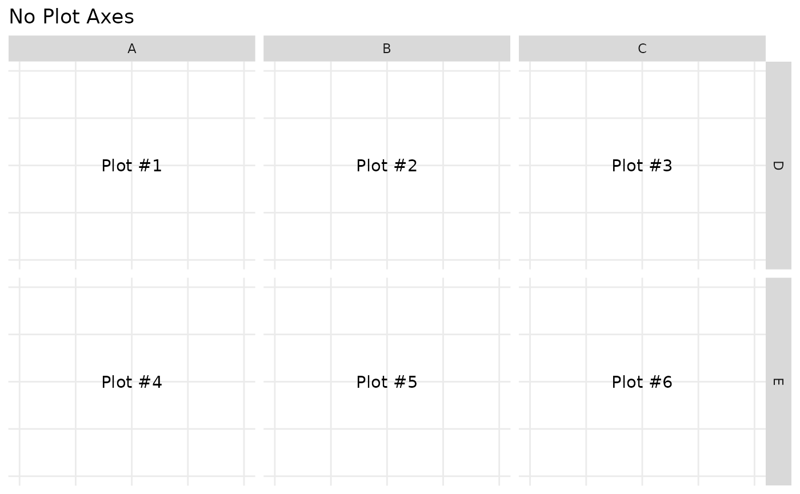

GGally::ggmatrix()
ggmatrix() is a function for managing multiple plots in
a matrix-like layout. It was designed to adapt to any number of columns
and rows. This allows for very customized plot matrices.
Generic Example
The examples below use plots labeled 1 to 6 to distinguish where the plots are being placed.
plotList <- list()
for (i in 1:6) {
plotList[[i]] <- ggally_text(paste("Plot #", i, sep = ""))
}
# bare minimum of plotList, nrow, and ncol
pm <- ggmatrix(plotList, 2, 3)
pm
Matrix Subsetting
Individual plots may be retrieved from the plot matrix and can be placed in the plot matrix.
pm <- ggmatrix(
plotList,
nrow = 2, ncol = 3,
xAxisLabels = c("A", "B", "C"),
yAxisLabels = c("D", "E"),
title = "Matrix Title"
)
pm
p2 <- pm[1, 2]
p3 <- pm[1, 3]
p2
p3
pm[1, 2] <- p3
pm[1, 3] <- p2
pmAxis Control
The X and Y axis have booleans to turn on/off the individual plot’s
axes on the bottom and left sides of the plot matrix. To save time,
showAxisPlotLabels can be set to override
showXAxisPlotLabels and
showYAxisPlotLabels.
pm <- ggmatrix(
plotList,
nrow = 2, ncol = 3,
xAxisLabels = c("A", "B", "C"),
yAxisLabels = c("D", "E"),
title = "No Left Plot Axis",
showYAxisPlotLabels = FALSE
)
pm
pm <- ggmatrix(
plotList,
nrow = 2, ncol = 3,
xAxisLabels = c("A", "B", "C"),
yAxisLabels = c("D", "E"),
title = "No Bottom Plot Axis",
showXAxisPlotLabels = FALSE
)
pm
pm <- ggmatrix(
plotList,
nrow = 2, ncol = 3,
xAxisLabels = c("A", "B", "C"),
yAxisLabels = c("D", "E"),
title = "No Plot Axes",
showAxisPlotLabels = FALSE
)
pm
Strips Control
By default, the plots in the top row and the right most column will
display top-side and right-side strips respectively
(showStrips = NULL). If all strips need to appear in each
plot, showStrips may be set to TRUE. If all
strips should not be displayed, showStrips may be set to
FALSE.
data(tips)
subPlot <- function(smoker_value, sex_value) {
ggplot(
data = tips[tips$smoker == smoker_value & tips$sex == sex_value, ],
aes(x = !!as.name("total_bill"), y = !!as.name("tip"))
) +
geom_point() +
facet_grid(time ~ day)
}
plotList <- list(
subPlot("No", "Female"),
subPlot("Yes", "Female"),
subPlot("No", "Male"),
subPlot("Yes", "Male")
)
pm <- ggmatrix(
plotList,
nrow = 2, ncol = 2,
yAxisLabels = c("Female", "Male"),
xAxisLabels = c("Non Smoker", "Smoker"),
title = "Total Bill vs Tip",
showStrips = NULL # default
)
pm
pm <- ggmatrix(
plotList,
nrow = 2, ncol = 2,
yAxisLabels = c("Female", "Male"),
xAxisLabels = c("Non Smoker", "Smoker"),
title = "Total Bill vs Tip",
showStrips = TRUE
)
pm
pm <- ggmatrix(
plotList,
nrow = 2, ncol = 2,
yAxisLabels = c("Female", "Male"),
xAxisLabels = c("Non Smoker", "Smoker"),
title = "Total Bill vs Tip",
showStrips = FALSE
)
pm